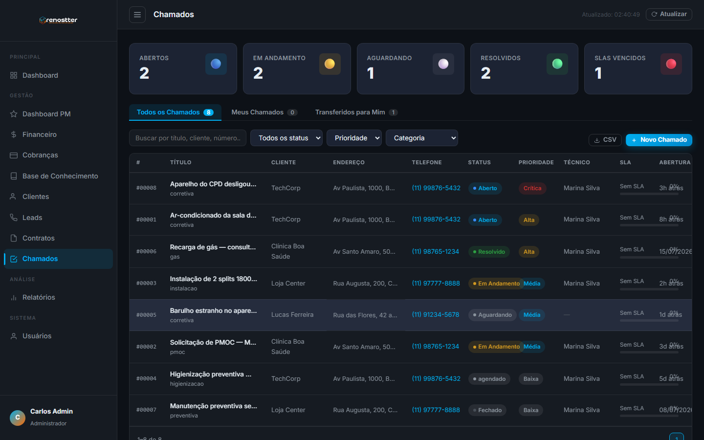
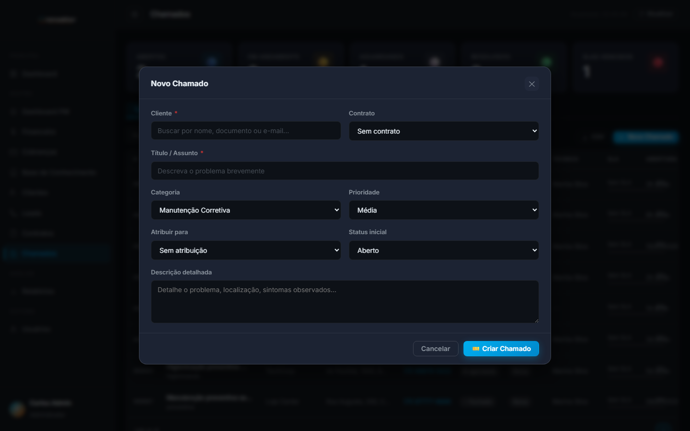

1Visão geral
O módulo de Chamados (também chamado de Tickets) é a central de atendimento técnico da Renostter. Clientes abrem chamados via portal ou telefone, técnicos recebem, executam o serviço, fecham o ticket. Tudo com controle de SLA, priorização e base de conhecimento.
Por que existe
Antes deste módulo, atendimento era em planilha + whatsapp. Problemas:
- Sem SLA formal → cliente fica sem saber quando é atendido
- Sem rastreio de quem fez o quê
- Conhecimento técnico se perdia (técnico saía, ninguém sabia resolver)
- Sem priorização → crítico e trivial na mesma fila
O módulo resolve com: fila priorizada, SLA automático, transferência entre técnicos, base de conhecimento pesquisável, e CSAT pós-atendimento.
Quem usa
- Cliente — abre chamado via portal ou telefone, acompanha status
- Técnico — pega, executa, fecha chamado
- Coordenador de campo — distribui carga, acompanha SLA, prioriza
- Gerente — KPIs, satisfação, gargalos
2Status de um chamado
Todo chamado passa por 6 status sequenciais:
| Status | O que significa | Próximo passo |
|---|---|---|
| Aberto | Cliente abriu, ninguém pegou | Técnico aceita e vira "em andamento" |
| Em Andamento | Técnico trabalhando | Resolve (vira resolvido) ou aguarda cliente/peça (vira aguardando) |
| Aguardando | Bloqueado por terceiro (peça, cliente, fornecedor) | Desbloqueia e volta para em andamento |
| Resolvido | Serviço executado, cliente notificado | Cliente confirma (vira fechado) ou reabre |
| Fechado | Cliente confirmou ou > 7 dias sem objeção | (final, vai para base de conhecimento) |
| Cancelado | Cancelado (cliente desistiu, foi em duplicidade, etc) | (final) |
3SLA & priorização
Tempos de SLA por prioridade
| Prioridade | Tempo de 1ª resposta | Tempo de resolução | Quando usar |
|---|---|---|---|
| Crítica | 30 minutos | 4 horas | Sistema parado, cliente sem ar-condicionado, risco à saúde |
| Alta | 2 horas | 24 horas | Problema sério mas com workaround, equipamento crítico |
| Média | 8 horas | 48 horas | Manutenção corretiva, equipamento funcionando com restrição |
| Baixa | 24 horas | 72 horas | Dúvidas, orientações, ajustes cosméticos |
O sistema marca chamados com SLA em 3 cores: verde (no prazo), laranja (vencendo em < 25% do tempo) e vermelho (vencido). O alerta visual fica no card do chamado e na lista.
4Acesso rápido
Para abrir o módulo:
- Sidebar → menu Gestão → Chamados
- URL direta:
http://localhost:3000/crm/admin/tickets.html - PWA técnico (
tecnico/index.html) — fila priorizada para o técnico logado - Portal do cliente — vê só os próprios chamados
Credenciais de demo
Para testar o módulo:
| Perfil | Senha | |
|---|---|---|
| Admin | admin@renostter.com | admin123 |
| Técnico | tecnico@renostter.com | tech123 |
| Cliente | joao@techcorp.com | client123 |
O login admin exige 2FA (código simulado aparece na tela). Técnicos e clientes não precisam.

5As 3 abas do módulo
| Aba | O que mostra | Quando usar |
|---|---|---|
| Todos os Chamados | Fila geral, todos os status, todos os técnicos | Coordenador/gerente acompanhando operação |
| Meus Chamados | Apenas os atribuídos ao técnico logado | Técnico vendo a fila dele |
| Transferidos para Mim | Chamados que outro técnico transferiu para você | Técnico ao iniciar o dia |
5.1 Todos os Chamados
Visão geral da operação. Lista com filtros (status, prioridade, categoria, busca textual). Permite transfer, assign, close, etc.
5.2 Meus Chamados
Fila pessoal do técnico. Aparece após o login na home. Atualização em tempo real (a cada 30s).
5.3 Transferidos para Mim
Notificação visual de transferências pendentes. Aparece em destaque no topo da home do técnico.
6Como criar um chamado
- Na home, clique + Novo Chamado
- Selecione o cliente (busca por nome, CNPJ ou e-mail)
- Vincule um contrato (opcional — se o cliente tem PMOC, o chamado entra no escopo)
- Preencha o título (curto, ex: "Aparelho do CPD desligou sozinho")
- Escolha a categoria (Manutenção Corretiva, PMOC, Instalação, Higienização, etc)
- Defina a prioridade (Crítica, Alta, Média, Baixa) — afeta o SLA
- Atribua um técnico (ou deixe "sem atribuição" para a coordenação pegar)
- Descreva o problema detalhadamente (sintomas, localização, quando começou)
- Clique 📩 Criar Chamado — o sistema agenda SLA e notifica o técnico

7Workflow do técnico
Como o técnico trabalha o chamado do início ao fim:
- Aceitar — clica em "Aceitar" no chamado atribuído (muda para "em andamento")
- Adicionar atualização — anota progresso (ex: "Vou ao local amanhã 9h")
- Marcar como aguardando se bloqueado (peça, cliente, fornecedor) — relógio de SLA pausa
- Resolver no local — executa o serviço, tira fotos
- Documentar solução — preenche checklist, peças usadas, observações técnicas
- Marcar como resolvido — notifica o cliente por e-mail
- Cliente confirma (ou após 7 dias sem objeção, fecha automático)
- CSAT — sistema envia pesquisa de satisfação 24h depois
Quando você resolve um problema incomum, marque a checkbox "Adicionar à base de conhecimento" no fechamento. A solução fica pesquisável para os próximos técnicos resolverem problemas similares em segundos.
8Como transferir entre técnicos
Quando o chamado precisa ir para outro técnico (especialidade, férias, sobrecarga):
- Abra o chamado
- Clique em ↪ Transferir
- Selecione o técnico destino
- Adicione um motivo da transferência (audit log)
- Confirme
Aparece automaticamente na aba "Transferidos para Mim" do destinatário. O sistema registra no audit log (Carlos Admin → Marina Silva — "Redistribuição de carga").
9CSAT pós-atendimento
24 horas após o fechamento do chamado, o sistema envia automaticamente um e-mail com pesquisa CSAT (Customer Satisfaction Score):
- Pergunta 1: De 0 a 10, qual a chance de recomendar a Renostter? (NPS)
- Pergunta 2: O problema foi resolvido? (sim/não)
- Pergunta 3: Comentário aberto (opcional)
As respostas alimentam o KPI "CSAT Médio" no Dashboard e BI.
• 9-10 = promotor (NPS positivo)
• 7-8 = neutro
• 0-6 = detrator (risco de churn)
• Meta saudável: CSAT médio > 8.0, promotores > 60%
10Boas práticas
✅ Faça
- Responda rápido em chamados críticos — SLA de 30min existe por motivo
- Sempre atribua um técnico — chamados sem dono somem da fila
- Use "Aguardando" quando bloqueado — relógio SLA pausa, mas não some da fila
- Documente a solução — futuros técnicos agradecem (e você também, quando esquecer)
- Adicione fotos antes/depois — evidência visual + base de conhecimento
- Revise os KPIs no fim do dia — veja se tem SLA vencendo, distribua carga
❌ Evite
- Não use prioridade "Crítica" sem motivo real — esgota o tempo de SLA do time e vira alarme falso
- Não deixe chamado parado em "em andamento" dias — se não consegue resolver, mude para "aguardando"
- Não delete chamados fechados — vai contra auditoria e LGPD
- Não transfira sem motivo — gera desconfiança do cliente
11API reference (resumo)
O módulo de Chamados tem duas camadas: API local (localStorage) e sync opcional com backend (em `cora-api/server.js`).
API local (db.get / db.set)
O frontend usa a abstração db em js/storage.js:
// Listar todos os chamados
const tickets = db.get('tickets');
// Buscar por ID
const t = tickets.find(x => x.id === 'tkt-00001');
// Atualizar
db.update('tickets', t.id, { status: 'resolvido' });
// Criar
db.insert('tickets', { id: 'tkt-00010', titulo: '...', ... });
// Transferir
db.insert('transfers', { ticketId: 'tkt-00001', fromUserId: 'u1', toUserId: 'u2', motivo: 'especialidade' });Backend sync (opcional)
Endpoints em cora-api/server.js (usados para sync ou BI):
GET /api/chamados
Lista chamados (com sync do localStorage).
GET /api/chamados/stats
KPIs: total, em_aberto, fechados, taxa_resolucao, sla_vencidos. Alimenta o BI.
GET /api/chamados/:id
Detalhe de um chamado + histórico de atualizações + transferências.
POST /api/chamados/:id/atualizar
Adiciona uma atualização textual (visível no histórico do chamado).
POST /api/chamados/:id/transferir
Registra transferência (cria entrada em `transfers`).
POST /api/chamados/:id/csat
Registra resposta de CSAT (NPS 0-10, comentário, se resolveu).
• README geral · Guia de Leads · Guia de Cotação
• Guia de PMOC · Guia de Contratos